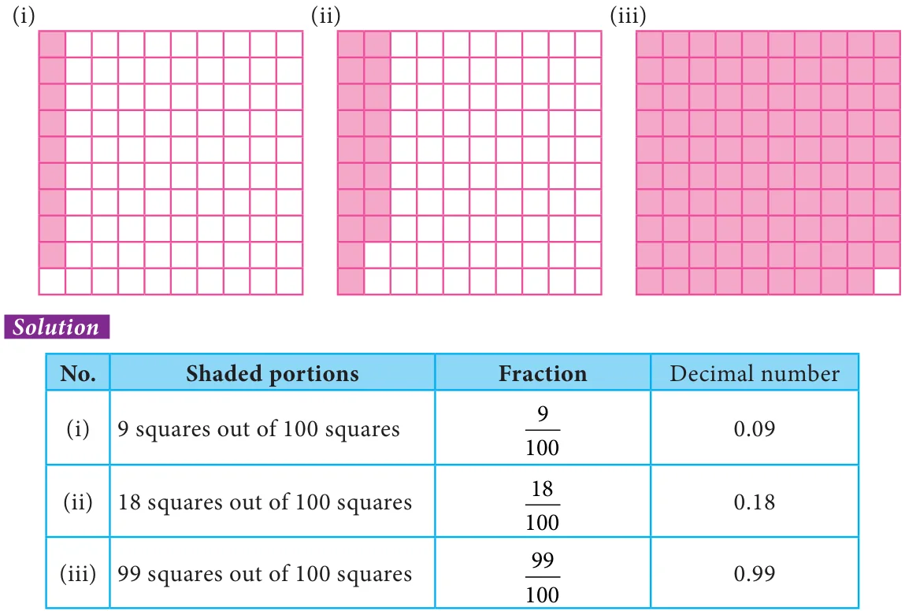
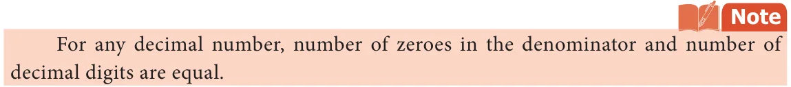
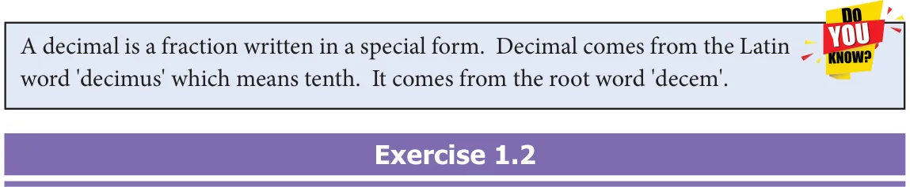

Let us see the relationship between fractions and decimals.
1.3.1 Conversion of Fractions to Decimals
We are familiar with fraction as a part of a whole. The place value of the decimal digits of a number are tenths \(\frac{1}{10}\) , hundredths1001 , thousandths10001 and so on.
If the denominator of a fraction is any of 10 10, ,10 ,... we can express them as decimals. Consider the example of distributing a box of 10 pencils to ten students. The portion of pencils given to 6 students will be \(\frac{6}{10}\) which can be expressed as 0.6. If the denominator of a fraction is any number that can be made as powers of 10 using the concept of equivalent fractions, then it can also be expressed as decimals. Consider the example of sharing 5 peanut cakes among five friends. The share of one person is \(\frac{1}{5}\) . To represent this fraction as a decimal number, we first convert the denominator into 10. This can be done by writing the equivalent fraction of \(\frac{1}{5}\) , namely \(\frac{2}{10}\) . Now the decimal representation of \(\frac{2}{10}\) is 0.2
1.3.2 Conversion of Decimals to Fractions
As we convert fractions into a decimal number, the decimal numbers can also be expressed as fractions.
For example, let the price of brand ‘x’ slippers be ` 399.95
Expanding the above price, we get,
399 95. \(= 3 \times 100 + 9 \times 10 + 9 \times 1+ 9 \times \frac{11}{10100} + 5 \times\)
\(= 399 + 95 = 39995 = 7999\)
100 100 20 Similarly, if the price of brand ‘y’ slipper is ` 159.95, then it can be expressed in terms of fractions as below.
159 95. \(=159 + 95 = 15995 = 3199\)
Try these
- 1.Convert the following fractions into the decimal numbers.
- (i)\(\frac{16}{1000}\) (ii) \(\frac{638}{10}\) (iii) \(\frac{1}{20}\) (iv) \(\frac{3}{50}\)
- 2.Write the fraction for each of the following:
- (i)6 hundreds \(+ 3\) tens \(+ 3\) ones \(+ 6\) hundredths \(+ 3\) thousandths.
- (ii)3 thousands \(+ 3\) hundreds \(+ 4\) tens \(+ 9\) ones \(+ 6\) tenths.
- 3.Convert the following decimals into fractions.
- (i)0.0005 (ii) 6.24
Example 1.6 Write the shaded portion of the figures given below as a fraction and as a decimal number.

Example 1.7 Express the following fractions as decimal numbers.
- (i)\(\frac{3}{5}\) (ii) \(\frac{5}{100}\)
Solution
- (i)\(\frac{3}{5} = \frac{6}{10} = 0.6\)
- (ii)\(\frac{5}{100} = 0.05\)
Example 1.8 Write the following fractions as decimals.
- (i)\(\frac{2}{5}\) (ii) \(\frac{3}{4}\) (iii) \(\frac{9}{1000}\) (iv) \(\frac{1}{50}\) (v) 315
Solution
- (i)We have to find a fraction equivalent to \(\frac{2}{5}\) whose denominator is 10.
\(\frac{22 \times 24}{55 \times 210} = = = 0 4\).
- (ii)We have to find a fraction equivalent to \(\frac{3}{4}\) with denominator 100. Since there
is no whole number that gives 10 when multiplied by 4, let us make the denominator as 100.
So, \(\frac{33 \times 2575}{44 \times 25100} = = = 0 75\).
- (iii)In \(\frac{9}{1000}\) , tenth and hundredth place is zero.
Therefore, \(\frac{9}{1000} = 0 009\).
- (iv)We have to find a fraction equivalent to \(\frac{1}{50}\) whose denominator is 100.
\(1 = 1 \times 2 = 2 = 0 02\). \(50 50 \times 2 100\)
- (v)In \(3 \frac{1}{5}\) , keep the whole number 3 as such, we can find a fraction equivalent to \(\frac{1}{5}\)
with denominator 10.
\(3+ 1 = 3+ 1 \times 2 = 3+ 2 = 3 2\). \(5 5 \times 2 10\)
Example 1.9 Convert the following into simplest fractions.
- (i)0.04 (ii) 3.46 (iii) 0.862
Solution
- (i)0 04. \(= \frac{41}{10025} =\)
- (ii)3 46. \(= 3+ \frac{46}{100}\)
\(= 3+ \frac{46 \div 2}{100 \div 2} = 3+ \frac{23}{50} = 3 \frac{23}{50}\)
- (iii)0 862. \(= \frac{862}{1000}\)
\(= \frac{862 \div 2431}{1000 \div 2500} =\)
Example 1.10 Find the decimal form of the following fractions.
- (i)\(153+ 96 + 7 + \frac{52}{101000} +\) (ii) \(999 + 99 + 9 + \frac{99}{10100} +\) (iii) \(23+ \frac{68}{101000} +\)
Solution
- (i)\(153+ 96 + 7 + \frac{52}{101000} + = 256 + 5 \times 101 + 0 \times 1001 + 2 \times 10001\)
\(= 256 502\). (since hundredths place is not there, it is taken as '0')
- (ii)\(999 + 99 + 9 + \frac{99}{10100} + =1107 + 9 \times \frac{11}{10100} + 9 \times\)
\(=1107 99\).
- (iii)\(23+ \frac{68}{101000} + = 23+ 6 \times 101 + 0 \times 1001 + 8 \times 10001\)
\(= 23 608\). (since hundredths place is not there, it is taken as '0')
Example 1.11 Write each of the following as decimals.
- (i)Four hundred four and five hundredths
- (ii)Two and twenty five thousandths.
Solution
- (i)Four hundred four and five hundredths.
\(= 404 + \frac{5}{100} = 404 + 0 \times \frac{11}{10100} + 5 \times = 404 05\).
- (ii)Two and twenty five thousandths
\(= 2 + \frac{25}{1000}\)
\(= 2 + \frac{25}{1001000} +\) since, \(100025 = 201000+ 5 = 100020 + 10005 = 1002 + 10005\) \(= 2 + \frac{025}{101001000} + + = 2 025\). [as there is no tenth we take it as 0 tenth]

Example 1.12 Express the following as fractions (i) A capsule contains 0.85 mg of medicine.
- (ii)A juice container has 4.5 litres of mango juice.
Solution
- (i)\(0.85 = 0 + \frac{85}{10100} +\)
\(= \frac{8517}{10020} =\)
A capsule holds \(\frac{17}{20}\) mg of medicine.
- (ii)\(4.5 = 4 + \frac{5}{10}\)
\(= 4 \frac{51}{102} = 4\)
A juice container has \(4 \frac{1}{2}\) litres of mango juice.

- 1.Fill in the following place value table.